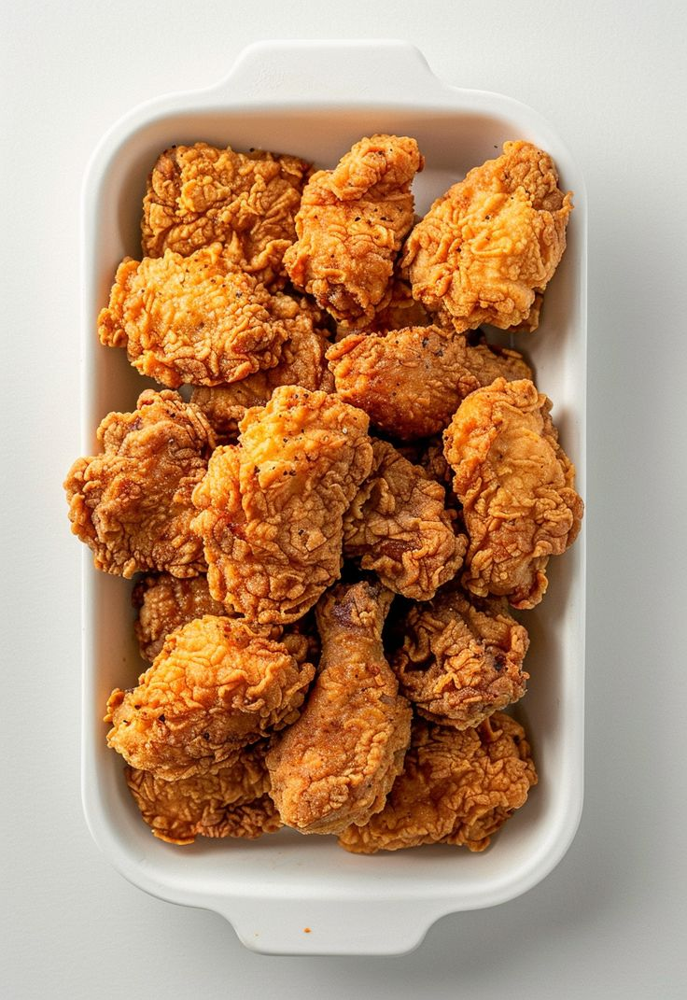

Crispy Fried Chicken

Description
This recipe uses whole milk and eggs as wet ingredients.
However, you can use buttermilk in place of whole milk if that's
what you prefer.
The dry ingredients are flour and spices and there's no need to
marinate the chicken as long as you season your milk mixture with salt and black pepper.
If you don't season it, you will miss out on flavor.
Ingredients
- 2 lb chicken legs
- 1 cup flour
- 2 teaspoons onion powder
- 2 teaspoons garlic powder
- 1 tablespoon paprika
- 1/2 teaspoon chili powder
- 1½ to 2 teaspoons salt
- 1 teaspoon black pepper
- 1 egg
- 3/4 cup milk
- Enough oil for deep frying
Steps
- Combine the flour, onion powder, garlic powder, paprika,
chili powder, salt and black pepper in a large bowl and set
it aside.
- Whisk together the milk, egg, pinch of salt, and pepper to
taste in a separate bowl and set aside.
- Dip each chicken piece first in the seasoned flour, transfer
it to the milk and egg mixture, and finally back into the flour.
- Heat the oil to 350°F and gently place the coated chicken drumsticks
inside the hot oil. Fry on medium heat until golden brown and crispy on the
outside and fully cooked inside. Flip the drumsticks between each fry cycle.
- Remove the heat and drain on a paper towel to remove excess oil